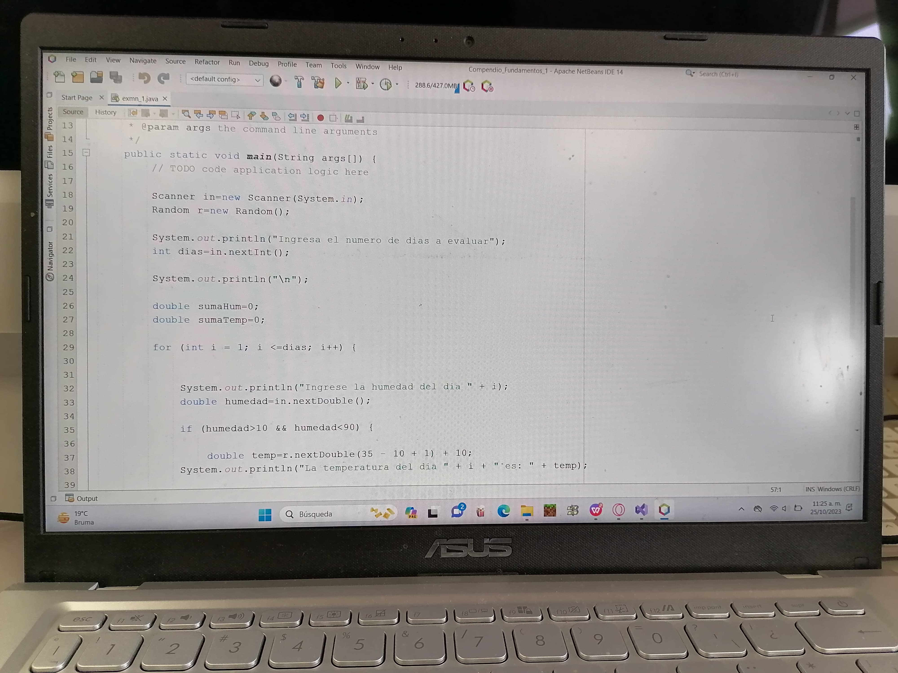

Soy José María ortiz Escamilla , un estudiante del ITSOEH que recide en Mixquiahuala de Juárez Hgo. Mexíco.Soy un hombre alto y algo delgado, con cabello negro y ojos cafes. En ocaciones soy una persona creativa y extrovertida. Me gusta Escuchar musica, hacer ejercicio y salir a pasear. Mi objetivo en la vida es ser un programador exitoso. Me considero una persona amable y generosa. Siempre estoy dispuesto a ayudar a los demás. Me encanta conocer gente nueva y aprender sobre diferentes culturas. Creo que la vida es una aventura y estoy emocionado de ver lo que me depara el futuro.
Desde que era un niño, siempre me ha interesado la tecnología. Me encantaba jugar videojuegos y aprender sobre cómo funcionaban las máquinas. A medida que fui creciendo, mi interés por las TIC's solo aumentó. Me apasiona el potencial de las TIC's para mejorar la vida de las personas. Creo que las TIC's pueden ser utilizadas para educar, comunicar, y crear nuevas formas de entretenimiento. Por ejemplo, las TIC's se pueden utilizar para crear plataformas educativas que sean más accesibles y personalizadas. También se pueden utilizar para crear herramientas de comunicación que nos permitan conectarnos con personas de todo el mundo. Y se pueden utilizar para crear formas de entretenimiento que sean más interactivas y envolventes. Estoy convencido de que las TIC's son el futuro, y quiero ser parte de ese futuro. Por eso, he decidido estudiar TIC's en la universidad. En la universidad, espero aprender más sobre las TIC's y desarrollar las habilidades necesarias para tener una carrera exitosa en este campo. Quiero ser un profesional que utilice las TIC's para hacer del mundo un lugar mejor.
Nací en Mixquiahuala de Juárez Hgo. Mexico. Mi familia es de origen humilde y siempre hemos vivido en un barrio comun. Mi infancia fue muy sencilla. Pasaba mis días jugando en la calle con mis amigos y ayudando a mis padres en las tareas domésticas. Desde pequeño, me di cuenta de la importancia de la familia y la comunidad. Mi barrio era un lugar muy solidario, donde todos nos conocíamos y nos ayudábamos. Mixquiahuala es un lugar hermoso, con una rica historia y cultura. Me encanta pasear por sus calles, conocer su gente y disfrutar de su gastronomía. Mi infancia en Mixquiahuala me enseñó mucho sobre la vida. Aprendí a valorar las cosas simples, a luchar por lo que quiero y a ayudar a los demás.
